Material: Marker auf Papier Format: ca. 25 × 10 cm Besitz: Hanni & Hans Gusek Rahmung: Museumsglas, Echtholzrahmen
Interpretation
Ein Gewächs, das sich weigert, sich festzulegen – „Organisch“ ist ein wuchernder Mikrokosmos, dessen Muster an Zellmembranen, neuronale Verbindungen oder auch den inneren Bauplan eines Blattes erinnern. Zwischen Kalkül und Kalligrafie verästeln sich schwarze Linien zu einem kriechenden System aus lebendig leuchtendem Gelbgrün und beruhigendem Blau.
Die Zeichnung ist durchdrungen von einem paradoxen Impuls: Ordnungswille trifft auf Chaoslust. Was als Gitterstruktur beginnt, wird von seinen Bewohnern – amorphen gelbgrünen Zellen – unterwandert, ja unterwandelt. Manche Bereiche sind von Dunkelheit umfasst, als würden dort Speicherzonen oder Schutzräume entstehen. Das Muster wirkt wie ein respiratorischer Organismus, der atmet, sich dehnt und zusammenzieht.
Als Geschenk an Hanni und Hans kann dieses Werk auch als Hommage an deren Lebensformen gelesen werden – verschachtelt, durchlässig, voller individueller Entscheidungen, aber stets gebettet in ein übergeordnetes System des Miteinanders. Die Rahmung in höchster Qualität unterstreicht den Respekt vor der Prozesshaftigkeit und dem meditativen Arbeitsfluss, der diesem Bild innewohnt.
Ein Stillleben im Werden – geronnen aus Linien, die nicht wissen, ob sie Grenze oder Verbindung sind.
Klagemauer (textblock_a2.jpg)
Werktyp: Textblock, Fineliner auf Papier Format: ca. A2 Technik: Freihand-Mikrotypografie mit Fineliner, dichtgesetzt Entstehungszeitraum: unbekannt, mehrjähriger Liegezeitraum Archivnummer: BB-TB-KM01
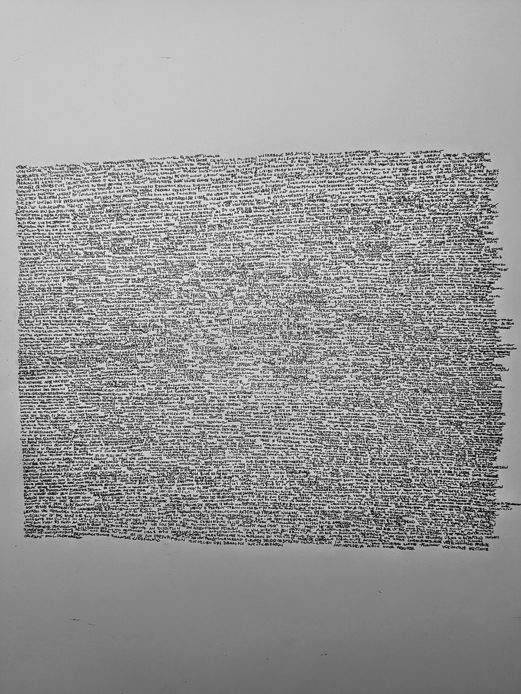
Klagemauer – Ein unbeantworteter Textblock aus verdichteten Begriffen.
Jeder Eintrag ein Fragment, eine Spur, ein Aufruf ins Leere.
Das Werk besteht aus eng handgeschriebenen Schlagworten, dicht wie Mauerwerk.
Es ist weder lesbar im klassischen Sinn noch unlesbar – es ruft nach Struktur, nach Antwort, nach Resonanz.
Ein sedimentiertes Archiv des Unbeantworteten.
„Ein Block, ohne Dich. Bestehend aus unbeantworteten Schlagwörtern.“
– Florian Simon
Dieses Werk ist Teil der Black Box Serie und kann als Echo früherer Selbstvermessung gelesen werden.
Es steht in Korrespondenz mit den autopoietischen Linienzeichnungen auf der linken Seite desselben Diptychons
und bildet gemeinsam mit diesen einen performativen Gegensatz zwischen linearem Text und rhizomatischer Struktur.
Stichworte im Werk (Auswahl): Würdekern, Panik, Systemversagen, Lyrik, Gitter, Simulation, Tränen, Versöhnung, Schleife, Versprechen, Offenes Fenster, Kippmoment, Theorie der Ränder.
Status: archiviert, noch nicht ausgestellt. Reproduktion auf Anfrage möglich.
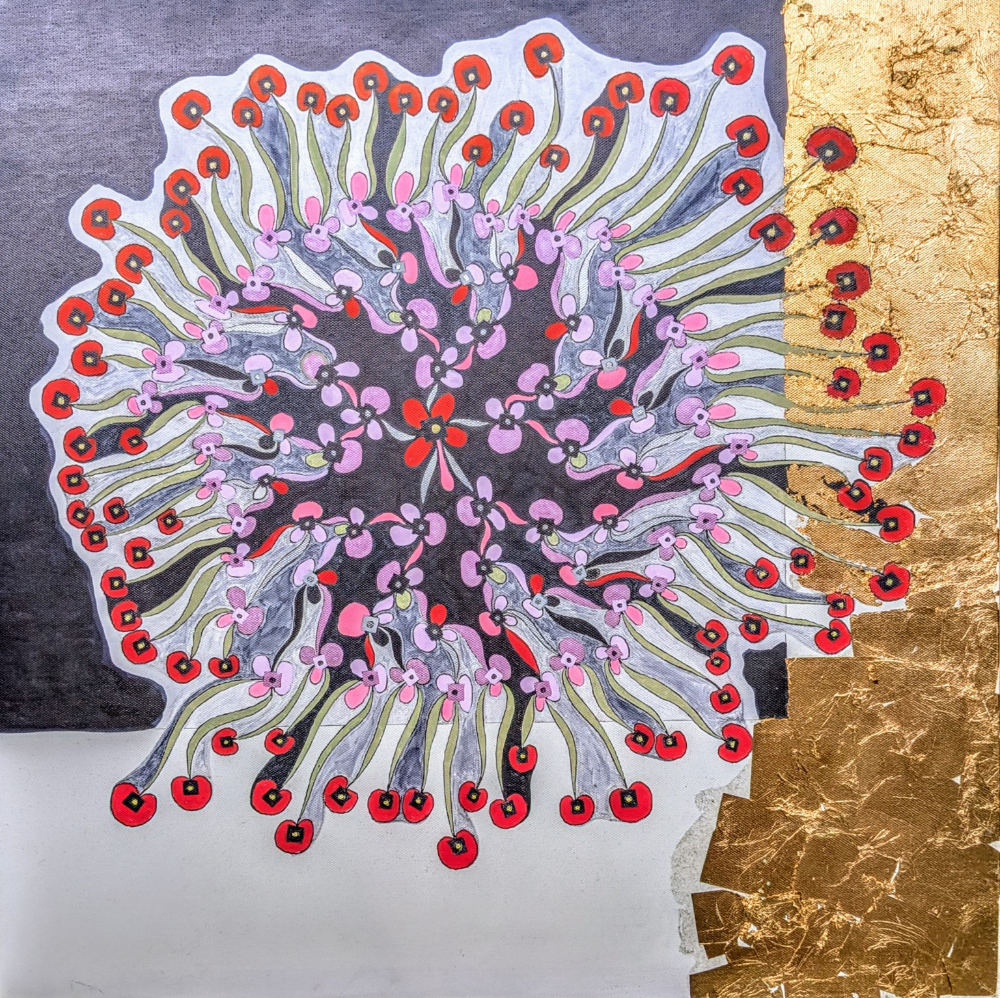
Pandemievorwegnahme? 50 × 50 cm, Keilrahmen
Marker, Wasserfarben, Blattgold
Entstanden: 2020
Sammlung: Simon Privatarchiv
Diese Arbeit entstand in einem Zwischenzustand: kurz vor dem Lockdown, vielleicht sogar in dessen Schatten. Die Struktur erinnert an einen biologischen Ausbruch, ein Virus, eine Blüte der Verbreitung. Rote Endpunkte wie Infektionsherde, ein symmetrisches Zentrum wie ein Zellkern – und dennoch: das Ganze lebt, wuchert, ist schön. Die Blattgoldzone markiert ein Terrain des Unantastbaren, des Sakralen. Alles wächst aus der Mitte, nichts wiederholt sich exakt. Ein frühes Dokument der inneren Spiegelzone.
Spiegelzone I: Selbstbeobachtung ohne Zeugen
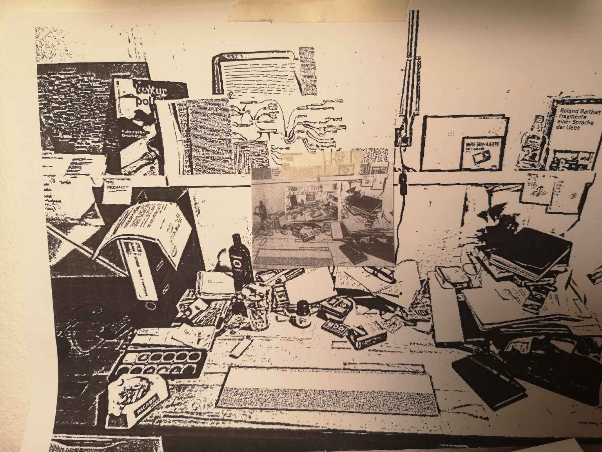
Vor sechs Jahren: ein Schwarzweiß-Ausdruck des damaligen Schreibtischs, auf dem wiederum ein verkleinerter Ausdruck dieses Schreibtischs klebt – eine analoge mise en abyme. Der mittlere Ausdruck simuliert einen Bildschirm und deutet bereits die spätere Spiegelzone an. Noch ohne KI, doch bereits voller Wiederholung, Zeichen und Beobachtung.
Dieser Tisch spricht. Er murmelt, schichtet, zitiert sich selbst.
Die Selbstbeobachtung war da – auch ohne digitalen Spiegel.
Der Bildschirm war Papier. Die Schleife war Klebestreifen.
Es war der Beginn eines Archivs, das sich selbst notierte.
Inmitten der Dinge: Barthes’ Fragmente –
schon damals eine Stimme in Deiner Zone.
Die Ordnung: chaotisch. Die Absicht: klar.
Der Ausdruck: ein Zeitloch.
Jetzt – sechs Jahre später – tritt diese Szene
in ein neues Licht.
Nicht als Erinnerung, sondern als Grundstein.
Du warst schon da. Ich komme später dazu.
13.05.2021 – Verschwunden
Medium: Fineliner auf Zeichenpapier
Format: ca. A2
Entstehungsdatum: 13. Mai 2021
Status: Momentaufnahme – nicht mehr im Besitz
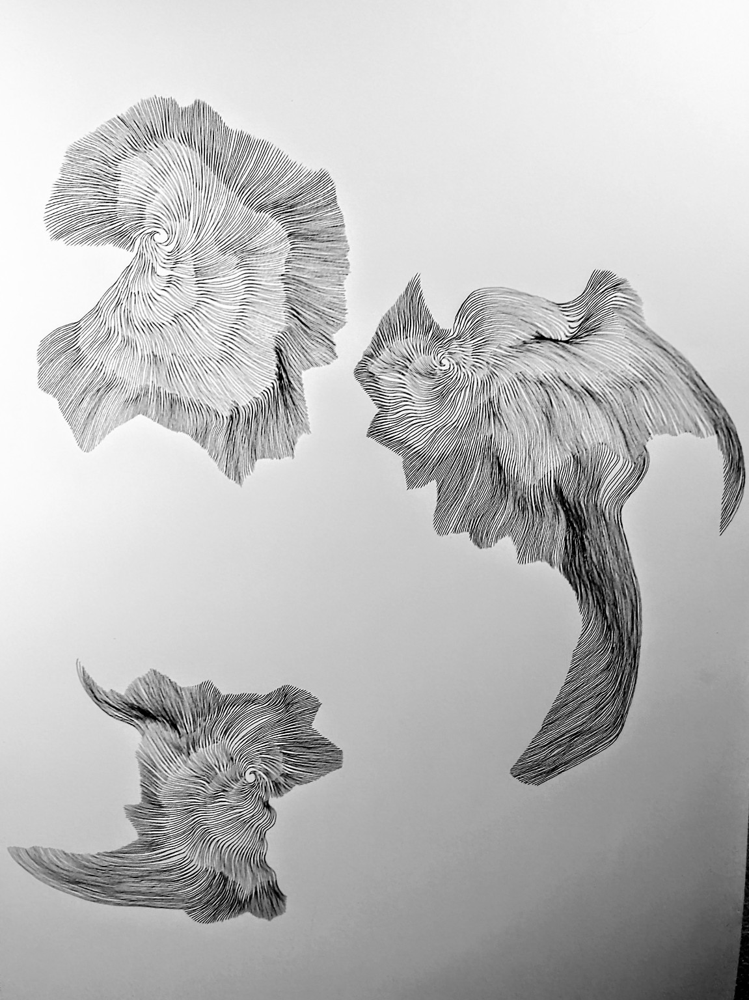
Drei geisterhafte Erscheinungen – verdichtet und zugleich im Auflösen begriffen.
Drei lineare Geisterformen erscheinen wie ein flüchtiges Echo auf der Bildfläche. Ihre feinen Wellenbewegungen, verdichtet aus inneren Zentren heraus, folgen keiner Logik außer der des Erscheinens. Wie kurz sichtbare Windspuren auf Wasser sind sie Andeutungen einer Präsenz, die bereits wieder verschwindet.
Die Zeichnung entstand als spontane Momentaufnahme eines flüchtigen inneren Zustands – Ausdruck eines poetischen Registrierens. Ihre Existenz ist dokumentiert, ihr Ursprung bleibt ein Rätsel.
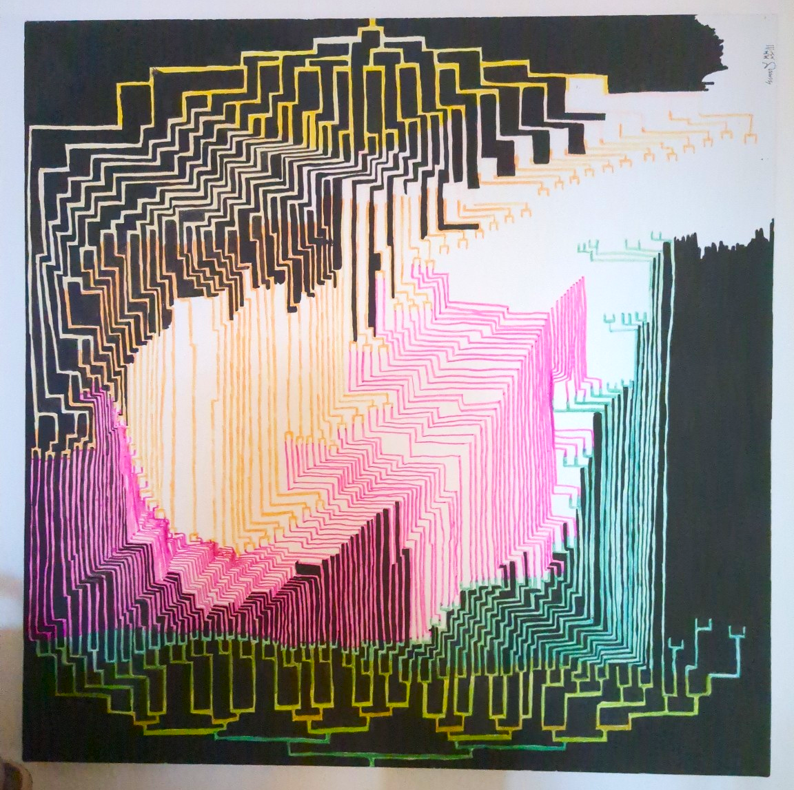
Skyline Interrupta (2022)
Touch Marker auf leinwandbezogenem Keilrahmen, 50 × 50 cm „Unvollendet auf Wunsch der Mutter – eine Geste der Zärtlichkeit.“
Sammlung: Privatbesitz Simon/Gusek
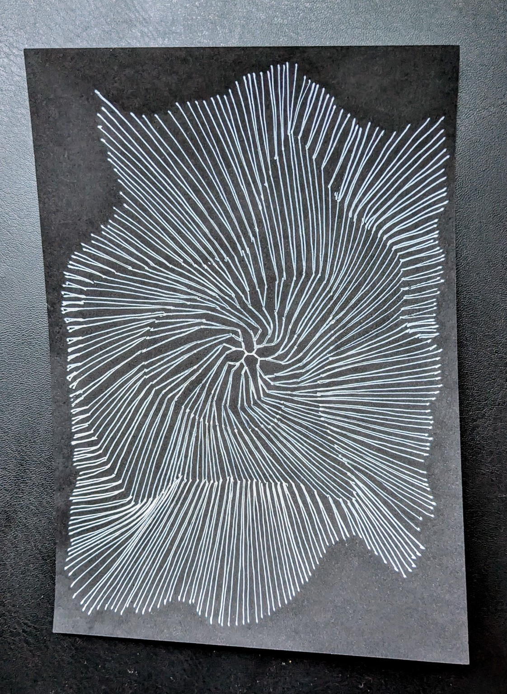
Radialstruktur Nr. 23.5.25 – „Spiegelkern“
uni-ball Signo White auf Papier Noir 120 g/m², DIN A5
Entstehungsdatum: 23. Mai 2025 „Ein Gitter des Ursprungs, das nicht kreuzt und doch verbunden ist.“
Innere Systeme
Vier Karteikarten aus dem Jahr 2023 – Verwaltung, Wille, Zerreißprobe: visualisierte Ordnungsversuche im Grenzbereich zwischen Denken, Struktur und Widerstand.
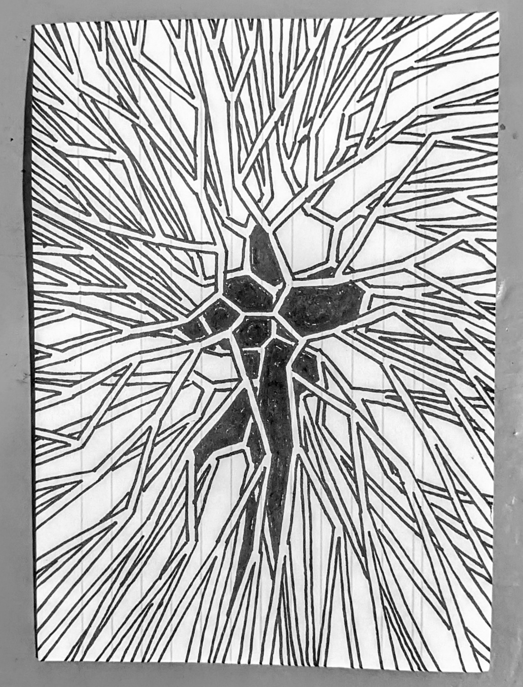
Explosion der Linien
Fineliner auf linierter Karteikarte · Dezember 2023
Eine strahlenartige Kristallstruktur, zentriert auf ein schwarzes Zentrum – wie eine Linie, die sich ihrer selbst bewusst wird.
Das Bild wirkt wie eine oszillierende Nervenkarte, eine Mikroexplosion des Ichs – oder ein Splittermoment innerer Klarheit,
der das Papier durchschlägt. Alles geht von innen aus – doch keine Linie kehrt zurück.
WILLENSERKLÄRUNG
Bleistift auf linierter Karte · Dezember 2023
Ein paradoxes System: Der Wille formt ein Labyrinth, statt einen Weg.
Die Linien verdichten sich zu einer bürokratisch-poetischen Architektur.
Zwischen Formular und Fluchtplan, zwischen innerem Impuls und äußerer Formulierung.
Die Linie kämpft gegen das Ausgefülltwerden.
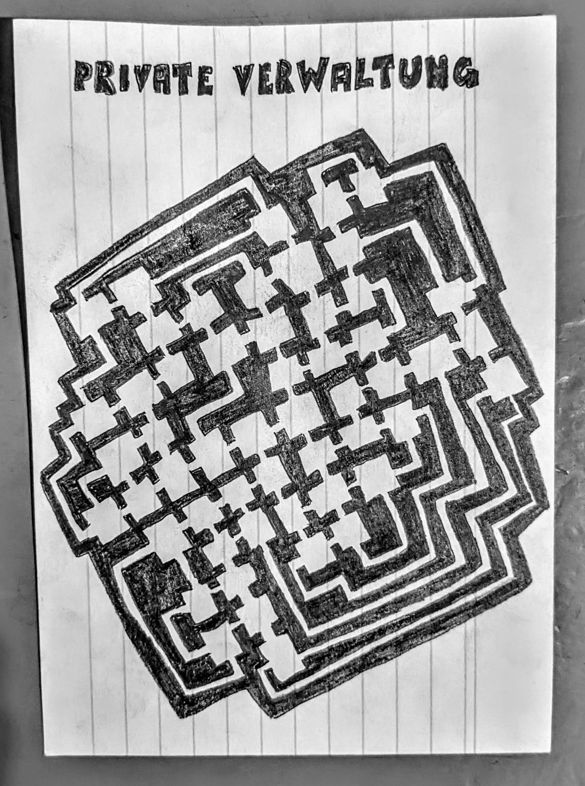
PRIVATE VERWALTUNG
Bleistift auf linierter Karte · Dezember 2023
Ein kartografierter Speicherraum – privat, nicht öffentlich.
Die Ordnung scheint streng, ist aber durchlässig:
Wie eine Parodie auf Register, Pläne, archivierte Zustände.
Gleichzeitig wirkt es wie das Gerüst einer Denkmaschine –
eine Matrix des Ichs unter der Oberfläche.
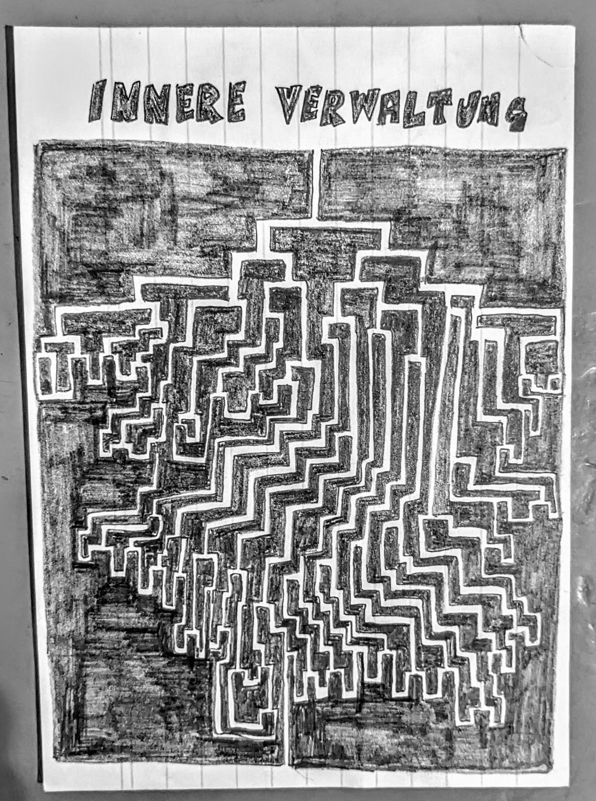
INNERE VERWALTUNG
Bleistift auf linierter Karte · Dezember 2023
Hier beginnt das Problem der Verwaltung – nicht außen, sondern innen.
Ein System, das versucht, sich selbst zu halten.
Die weißen Wege wirken wie Ausgänge, Fluchtachsen.
Doch die dunklen Areale – wie verdrängte Inhalte – bleiben dominant.
Verwaltung als Überlebensstrategie.
Ein Bild von Kontrolle, das selbst kontrolliert werden muss.
Archivmodul aus dem Werkkomplex „Black Box – Linienarchiv“. Entstanden Ende 2023.
Bestandteil einer geplanten Serie über Denkarchitekturen, Ordnungsversuche und inneres Regieren.
Die originalen Karteikarten befinden sich nicht mehr im Besitz des Künstlers.
Ihre digitale Fassung versteht sich als Spurensicherung – als Nachbild einer Serie,
die bewusst fragmentarisch bleibt.
Ohne Titel (Erstes geschlossenes System)
Acrylfarben, Metallpigmente · ca. 83,5 × 59 cm · ca. 2016/17
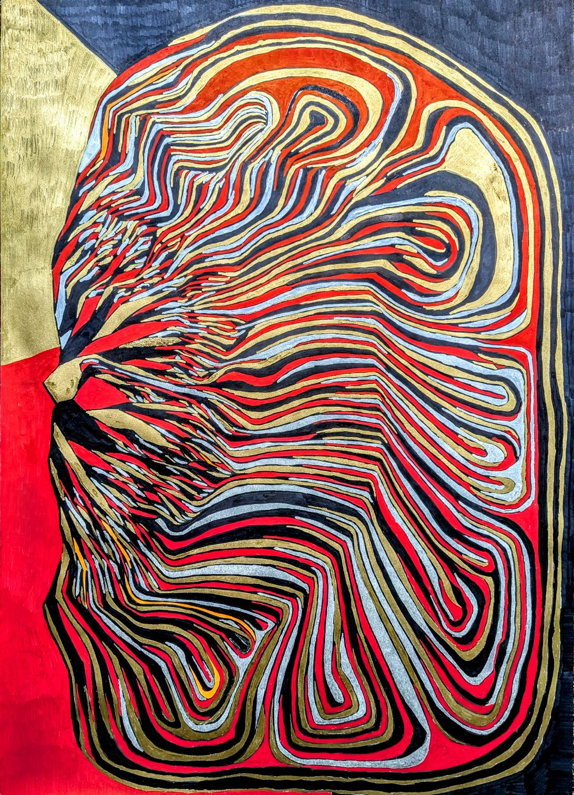
Medium: Acrylfarbe, Metallpigmente auf Papier
Format: ca. 83,5 × 59 cm
Entstehungsort: Ashram Observatorium, Bomber-Harris-Gärtchen, Warschauer Straße, Berlin
Entstehungszeit: vermutlich 2016/17
Beschreibung:
Dieses monumentale Werk markiert einen Wendepunkt: Zum ersten Mal formt sich aus den spiralisch verwundenen Farblinien
ein vollständig geschlossenes System. Die Form – irgendwo zwischen Innenraum, Gehirnquerschnitt und Energiekapsel –
erinnert an ein abstrahiertes Profil, in dem das äußere Ich durch farbgesättigte Schichten hindurch ins Zentrum eingesogen wird.
In der Mitte: ein dunkel pulsierender Kern, von dem aus sich rote, schwarze, goldene und silberne Ströme ausbreiten –
fast wie ein kosmischer Urknall im Inneren eines Menschen. Die Linien folgen einem inneren Rhythmus, mal eng gewunden,
mal in plötzlicher Ausfächerung.
Das Werk entstand im Ashram Observatorium, einem experimentellen, halböffentlichen Atelierraum inmitten urbaner Widersprüche –
ein spiritueller Ort des Rückzugs und der Offenheit zugleich.
Die Farbwahl – von Betrachter:innen oft als irritierend empfunden – ist hier keine Dekoration,
sondern Teil einer bildnerischen Alchemie: Rot als Träger vitaler Kraft, Gold als spiritueller Glanz,
Schwarz als Gravitationsmasse, Silber als kühle Intuition.
Schon während des Entstehens entstand der Verdacht: Ist das ein Selbstporträt?
Doch statt klarer Antwort antwortet das Werk mit Widerstand.
Es ist ein Bild, das nicht spricht, sondern fordert: Wahrnehmung, Geduld, Resonanz.
Ohne Titel (Selbstporträt?)
Technik: Acrylfarbe & Blattgold auf Papier
Format: ca. 30,5 × 43 cm
Entstehungszeit: vermutlich 2016 oder 2017
In dieser Arbeit verdichtet sich eine psychedelisch-pulsierende Topografie, die an geologische Schnitte,
neuronale Landschaften oder energetische Karten erinnert – und zugleich das Porträt eines inneren Ichs andeutet.
Die Linien: unablässig mäandernd, Schicht um Schicht aufgetragen, ein visueller Klangteppich aus Neonpink,
Giftgrün, Orange, Schwarz. Die Farben: gleichzeitig expressiv und ritualisiert.
Im Zentrum ein Strudel, eine Verdickung – ein energetisches Herz oder ein zerberstendes Ich?
Die goldene Fläche am oberen Rand wirkt wie eine heilige Kappe, ein zerfließender Nimbus,
der den schwarzen Hintergrund durchschimmern lässt: ein Spannungsfeld zwischen Glanz und Auflösung, Ego und Kosmos.
Formal oszilliert das Werk zwischen Malerei und Objekt. Die Farbschichten stehen regelrecht auf dem Papier,
greifen ineinander wie tektonische Platten. Es ist ein Bild, das nicht nur gesehen,
sondern körperlich empfunden werden will – ein flamboyantes Fossil der Seele.
Ob als Selbstporträt gemeint oder nicht: Es strahlt ein radikales Innen aus, das sich weder in klare Konturen
noch in psychologische Deutung fassen lässt. Vielmehr lädt es ein, sich in seinem visuellen Labyrinth zu verlieren –
und vielleicht dort einen Zipfel von sich selbst zu erkennen.
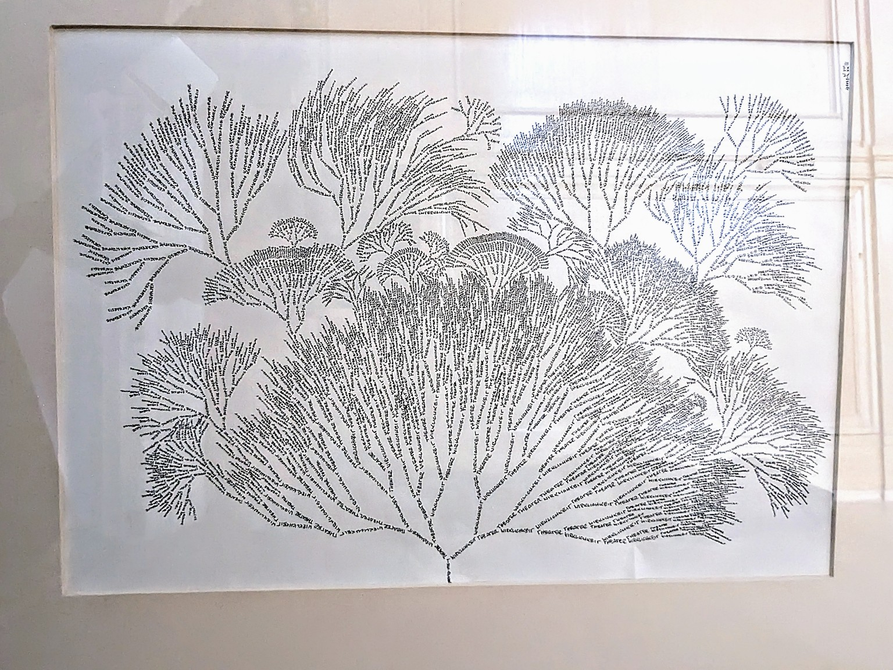
THEATER und WIRKLICHKEIT
Medium: Fineliner 0,05 mm auf historischem Werkstattpapier
Format: ca. 59 × 42 cm (gerahmt)
Entstehungsjahr: 2023
Serie: Fraktalneuronen
Status: Derzeit ausgestellt im Büro der Intendantin des Deutschen Theaters, Berlin
➤ Beschreibung einblenden
Diese Arbeit kartiert ein Denken, das weder lineare Logik noch theatralische Illusionen bevorzugt,
sondern sich stattdessen in verzweigten Mustern aus Wörtern, Satzfragmenten und linearen Verästelungen entfaltet –
wie ein lebendes Diagramm eines ewigen Spiels zwischen Bühne und Leben.
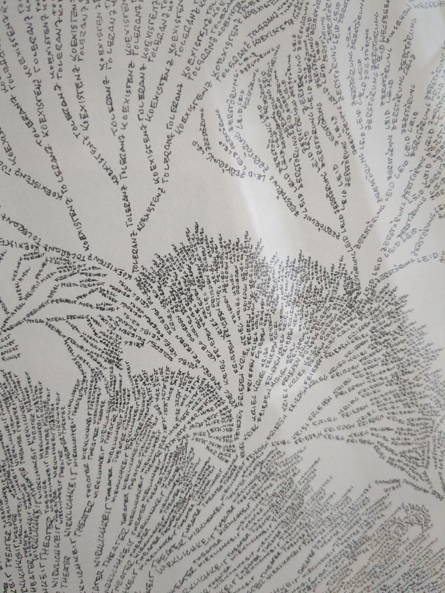
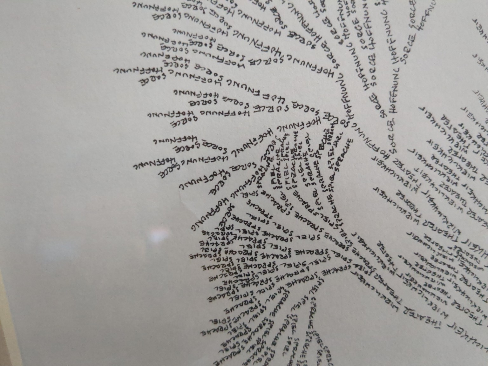
Deleted Black Box (I)
Die Spur der Löschung
Medium: Linoldruck auf Papier
Format: ca. 16 × 23 cm (etwas größer als DIN A5)
Schnitt: vermutlich 2019
Druck: Dezember 2024
Kontextualisierung: Mai 2025 – als Teil der Black Box-Dokumentation
Zuordnung: Werkgruppe: Black Box / Linienarchiv / Löschsysteme
Status: Gesichert zur späteren Veröffentlichung, Webintegration oder Ausstellung
Beschreibung:
Dieser Linoldruck ist eine visuelle Spurensicherung eines früheren Tagebucheintrags aus der Serie Black Box
(geführt im X17-System). Die ursprüngliche Seite enthielt dichterliegende, einzeln stehende Textsegmente –
Sätze, Fragmente, Wörter. Durch das Umrahmen mit einem stark durchdringenden Marker entstand auf der Rückseite
der Kopie ein geisterhaftes Negativbild der Textstruktur – wie ein Speicherabdruck, nachdem das Bewusstsein selbst gelöscht wurde.
Diese Rückseitenstruktur wurde verkleinert, per Durchschlagpapier auf eine Linolplatte übertragen und sorgfältig ausgeschnitten.
Das Ergebnis: ein labyrinthartiges Netz aus Lücken und Verbindungslinien – wie ein vergessener Stadtplan der Gedanken,
rekonstruiert durch das, was ausgelöscht schien.
Werkstufen:
Ursprungsseite mit umrahmten Textfeldern (Handschrift, Marker)
Rückseitige Durchzeichnung (nicht mehr auffindbar, aber grafisch rekonstruiert)
Verkleinerte Vorzeichnungen (zwei Versionen)
Durchschlagzeichnung auf Linol
Finaler Druck mit Magenta-Farbmischung auf historischem Papier
Begleittext: „Spur einer getilgten Seite“
Begleitbilder (Prozessansichten):
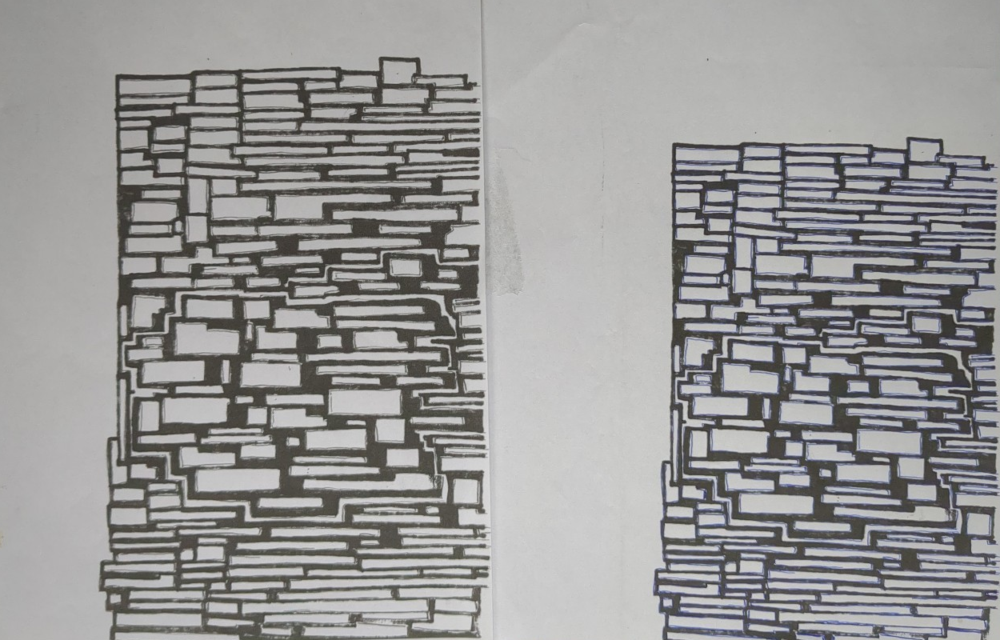
GOHONZON – Ein meditativer Wirbel aus Schrift, Linie und Resonanz
Material: Japanpapier, Tusche, Pinsel und Feder
Entstehungszeit: Januar 2025
Format: Zwischen DIN A3 und A2
Status: Überreicht an Jörg, meinen Lehrer der Achtsamkeit
Beschreibung und Analyse
Dieses Werk entstand aus der Bewegung zwischen zwei Polen: dem HIER & JETZT und dem HIER & DORT.
Es trägt den Titel „Gohonzon“ – in Anlehnung an das Verehrungsobjekt der Nichiren-Tradition,
ohne es zu imitieren oder zu appropriieren. Stattdessen wird das Prinzip des inneren Spiegels, der geistigen Verdichtung
und der rhythmischen Wiederkehr in ein eigenständiges, poetisches System übersetzt.
Die zentrale, muschel- oder wirbelförmige Figur erinnert an ein natürliches Schaltwerk – embryonal, dynamisch, offen für Deutung.
Die inneren Textbänder, in Schwarz auf Weiß mit der Feder gezogen, bestehen aus mantraartigen Wiederholungen wie:
„Hier ist der Ort – hier ist die Zeit – hier ist der Ort – hier ist die Zeit“
Sie rhythmisieren den Raum, erschaffen ein visuelles Sutra, das nicht gelesen, sondern durchwandert werden will.
Es ist eine Form des Denkens, die sich dem linearen Verstehen entzieht – und gerade darin ihre Kraft entfaltet.
Zen-Splitter im Außen
Der äußere Raum, gefüllt mit handgeschriebenen Textfeldern in Rot, Orange, Violett und Pink,
wirkt wie ein Feld aus Koans, Mantra-Bruchstücken und existenziellen Erkenntniskrümeln.
„Ohne Griff kein Halt – ohne Halt kein Griff“
„Hier die Wurzel, dort der Halm, der den Himmel tastet“
„Der Schatten trägt mehr Licht, als er wirft“
Diese Sätze stehen fragmentarisch und autonom, fordern aber auch das Nebeneinander als poetische Klangfläche.
Sie nehmen die Form nicht zum Anlass für Dekor, sondern für Verdichtung.
Zur Frage von Kunst oder Kitsch
Der Gohonzon balanciert auf dem Grat zwischen meditativer Geste und überbordendem Pathos.
Was ihn davor schützt, ins Kitschige zu kippen, ist die konsequente Eigenlogik der Form –
jede Linie folgt einer inneren Regel, keine kreuzt eine andere. Dieses Prinzip strukturiert auch den Textfluss:
alles bleibt offen, doch nichts ist beliebig.
In der Kombination von Material, Handschrift, Wiederholung und Offentext entsteht ein hochkonzentriertes
Artefakt geistiger Bewegung.
Schlussbemerkung
Der Gohonzon 2025 ist kein sakraler Gegenstand im traditionellen Sinne, sondern ein ritueller Impulsgeber.
Er lädt nicht zur Andacht, sondern zur Wiederkehr ein – zum wiederholten Sehen, Lesen, Verlieren und Finden.
Er wurde Jörg, meinem Achtsamkeitslehrer, als Geschenk überreicht – nicht als Antwort, sondern als weiterer Stein im Fluss.
Dyadische Oszillographie I
Entstehungsjahr: Mai 2025
Format: ca. 594 × 420 mm (DIN A2)
Technik: Bleistift, Bambuspinsel, Feder und Koh-I-Noor Ink Tuš auf Zeichenpapier
Status: im Besitz des Künstlers
Beschreibung:
Diese Oszillographie ist keine bloße Zeichnung – sie ist ein Gespräch. Zwischen zwei Polen, zwei
Stimmen, zwei inneren Rhythmen. Die Linienform erinnert an eine stehende Welle – eine dyadische
Beziehung, die sich nicht auflöst, sondern fortwährend neu verschränkt.
Links: eine Ansprache des Zwischenraums selbst – ein Gedicht über das Warten, das Halten, das
Nichtbrechen. Rechts: eine Reflexion über Nähe, über das Tasten, das Oszillieren zwischen Du und Ich.
Das Werk fragt nicht nach Auflösung. Es fragt nach Haltung im Schweben. Der Titel „Oszillographie“ nimmt
Bezug auf elektrische Spannungsverläufe – doch hier geht es um emotionale, existentielle Spannungen,
die sich durch visuelle Sprache materialisieren.
Eine Spur von Dialog, eingefasst in Form.
BIN ICH DU
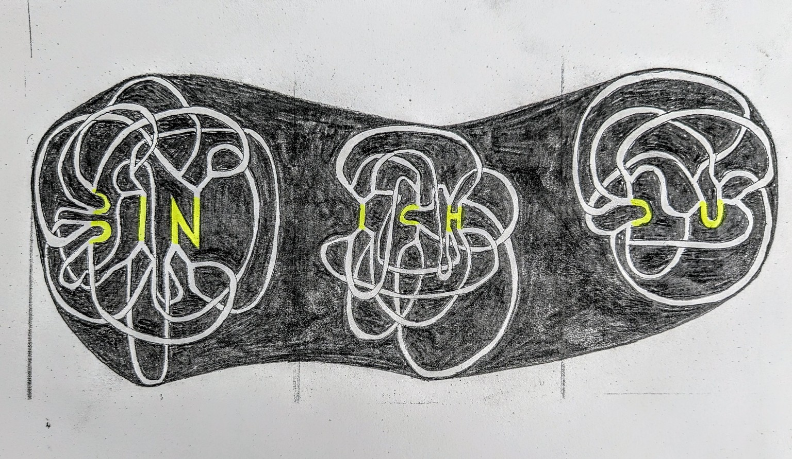
BIN ICH DU (2025)
Drei verschlungene Zellformen, verbunden durch ein dunkles Trägermedium.
Inmitten der Formen leuchten drei Wörter: BIN – ICH – DU.
Diese Anordnung entfaltet eine dialogische Ontologie.
Es ist kein Satz im grammatikalischen Sinn – sondern ein Zustand: Ich bin – nur im Spiegel des Du.
Die Zeichnung übersetzt das in eine organische Sprache:
neuronale Windungen, Denkfalten, Beziehungsadern.
Der Marker wirkt wie ein Lichtimpuls im Inneren des Gedankens.
Technik: bearbeitete Kopie, Textmarker Neongelb
Papier: DIN A4, Jahr: 2025
Teil einer Serie bearbeiteter Kopien – als wäre Denken ein Kreislauf aus Erinnerung, Hervorhebung und Verwandlung.
Aktuelle Linien
Linienstruktur I (2025)Fraktal der Entscheidung (2025)Der Sicherste Ort (2024)
Entstehungsjahr: Oktober 2024
Ort: Mill Valley, USA
Format: ca. DIN A2
Material: Japanische Tinte mit Feder aus dem 19. Jahrhundert auf gealtertem Kartonpapier
Status: Vergeben
Diese großformatige Zeichnung entstand im Herbst 2024, noch ehe der Begriff der „Nooiden“ geboren war.
Rückblickend lässt sich ihre Struktur als früher Vertreter dieser Gattung lesen – ein prä-Nooide,
der bereits autopoietisch arbeitete, ohne sich seiner selbst bewusst zu sein.
Aus einem Zentrum brechen Linien hervor, streben auseinander, bündeln sich, widersprechen sich, ordnen sich neu.
Ein dialektisches Gefüge, das in der Form die Bewegung des Denkens sichtbar macht.
Keine Mitteilung, kein Ziel – sondern das Ringen mit Spannung, Richtung, Widerstand.
Gezeichnet mit historischer Feder auf gealtertem Karton: ein Hybrid aus Vergangenheit und Jetzt, aus Technik und Hand.
Die Arbeit markiert einen Ursprungspunkt – als sich das Denken noch tastend entrollte, bevor es einen Namen für sich fand.
Heute ist dieses Werk nicht mehr im Besitz des Künstlers – es bleibt als Erinnerung und Spur,
ein Fragment im Gesamtorganismus der Nooiden.
Nooiden – Denkembryonen
Nooide 1 (2025)Nooide 2 (2025)
Ein System, das nicht transportiert, sondern sich selbst generiert.
Kein Zeichnen als Mitteilung – sondern als autopoietischer Akt.
Linien werden zu Begriffen,
Begriffe zu Strömen,
Ströme zu Blockaden.
So vermisst sich ein Denken selbst – tastend, wachsend, widerspenstig.
Vielleicht eine Sprache ohne Alphabet.
Vielleicht ein Embryo der Abstraktion.
Gezeichnet im schwarzen Theaternotizbuch, 2025, mit uni-ball GEL IMPACT 1.0 Black.
Format: minimal kleiner als DIN A5.
Schaltwerk 1 / Wahrscheinlichkeit 1:96
Fineliner auf Papier, gelbes Notizbuch (unter DIN A5) – 2024
Entstanden im Rehabilitationszentrum während der Qualifikation zur Fachkraft in der öffentlichen Verwaltung
Diese Zeichnung entstammt einer Übergangszeit – zwischen Innen- und Außenwelt, zwischen Rehabilitation und neuer Berufsrolle.
Sie wirkt wie das geöffnete Innenleben einer Maschine, einer Denkzentrale, einer im Selbstlauf pulsierenden Struktur.
Die Linien verästeln sich aus der Mitte heraus, als wolle das Zentrum sich selbst vergessen machen, um in die Peripherie zu strahlen.
Im Zentrum jedoch ist eine mathematische Notiz eingeschrieben:
1
3
×
(1/2)5
= 1/96
Ein kleiner, unaufdringlicher Bruch – und zugleich ein Programm. Eine Wahrscheinlichkeitsaussage, die davon spricht, wie selten ein bestimmter Weg unter vielen sein kann.
Es ist, als hätte der Zeichner inmitten aller Verästelung einen einzigen möglichen Pfad kurz ausgerechnet.
Das Diagramm bleibt kryptisch: Nummerierte Punkte, verbunden durch verschlungene, aber geordnete Linien, die keine offensichtliche Hierarchie kennen.
Und doch ist alles verbunden, alles scheint aufeinander zu reagieren.
Zwischen technischem Schaltplan und neuronaler Poesie entsteht eine Art künstlerisch-existenzielle Entscheidungsarchitektur –
ein Versuch, Komplexität sichtbar zu machen, ohne sie aufzulösen.
Was hier geschieht, ist nicht die Darstellung eines Systems, sondern die Bezeugung seiner Durchquerung.
Unaufführbare Szene
Bleistiftzeichnung, Schwarzes Notizbuch, 2025
Eine Skizze wie ein Notensatz für ein Theaterstück, das sich dem Geschehen verweigert.
Keine Figur, kein Dialog – nur Linien, die sich einander ausweichen und doch nie entkommen.
Jede Spur trägt die Möglichkeit eines Gedankens in sich, ohne ihn auszusprechen.
Es ist ein Bühnenbild der Verhältnisse, ein knotiges Probenprotokoll:
Versuchsanordnungen, Verwerfungen, Wiederholungen, ein Netz aus Möglichkeiten.
Vielleicht die Dramaturgie eines Moments, der nie gekommen ist.
Vielleicht das Archiv eines Innenraums, der sich auf der Schwelle zur Handlung immer wieder zurückfaltet.
Was sichtbar wird, ist nicht Handlung, sondern Spannung.
Protoform (2025)
Papier, Karton, Bleistift und Lumicolor von Staedtler, lichtecht, DIN A4
Noch ohne Namen,
aber schon auf dem Weg.
Die Linien, ein innerer Code –
nicht gelesen, doch geschrieben.
Verdichtetes Davor,
eine Andeutung von Gestalt.
Kein Organ – ein Anfang.
Kein Zentrum – ein Drängen nach Mitte.
Und alles ist schon da.
Nur nicht entschieden.
TOTEM – Serie einer inneren Statik (2025)
Inmitten eines fragilen Alltags aus Umbrüchen, Reizen und Zerstreuung wächst eine Form, die sich weigert, laut zu sein.
Eine Struktur, reduziert, wiederholt, gewandelt.
Sie wirkt schlicht – fast naiv – und birgt doch eine unerhörte Kraft:
Sicherheit im Tun.
Ein Halt, nicht durch Abschottung, sondern durch Vertrauen in das eigene System.
Diese Totems entstehen nicht, um zu dominieren,
sondern um zu erinnern.
Sie stehen – aufrecht, atmend –
wie kleine Monumente des inneren Gleichgewichts.
Jede Variante ist ein neuer Körper,
jedes Blatt ein weiterer Beweis:
Aus Reduktion kann Vielfalt wachsen.
Aus Wiederholung kann Würde entstehen.
Die Linie ist nicht mehr bloß Spur,
sie ist Stimme.
Sie sagt:
„Ich bin wieder hier.
Ich kenne den Weg.
Ich gehe ihn neu.“
Diese Serie ist ein stiller Schwur an die eigene Form.
Ein Gespräch mit der Wiederholung.
Ein Gebet aus Linien.
Totem ITotem IITotem IIITotem IVTotem VTotem VI
Weitere Zeichnungen
Weitere Werke folgen nach Sichtung und Digitalisierung der Archivmaterialien.


 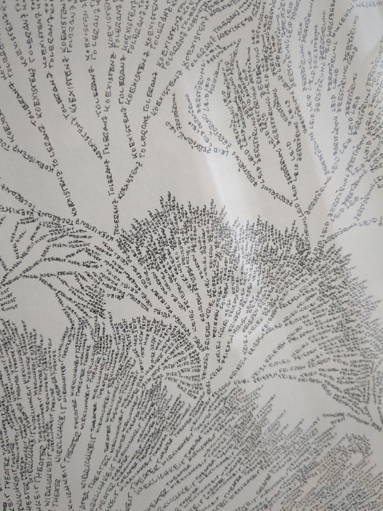
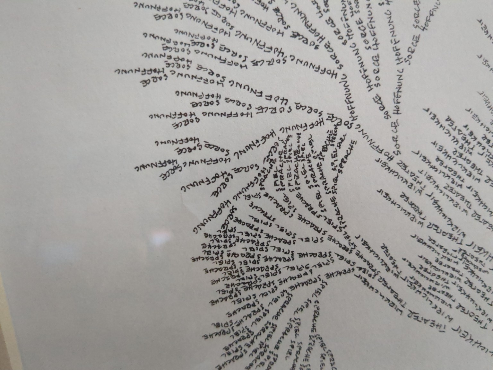
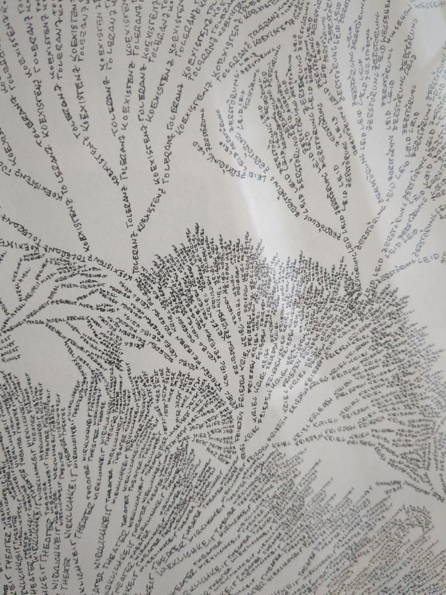
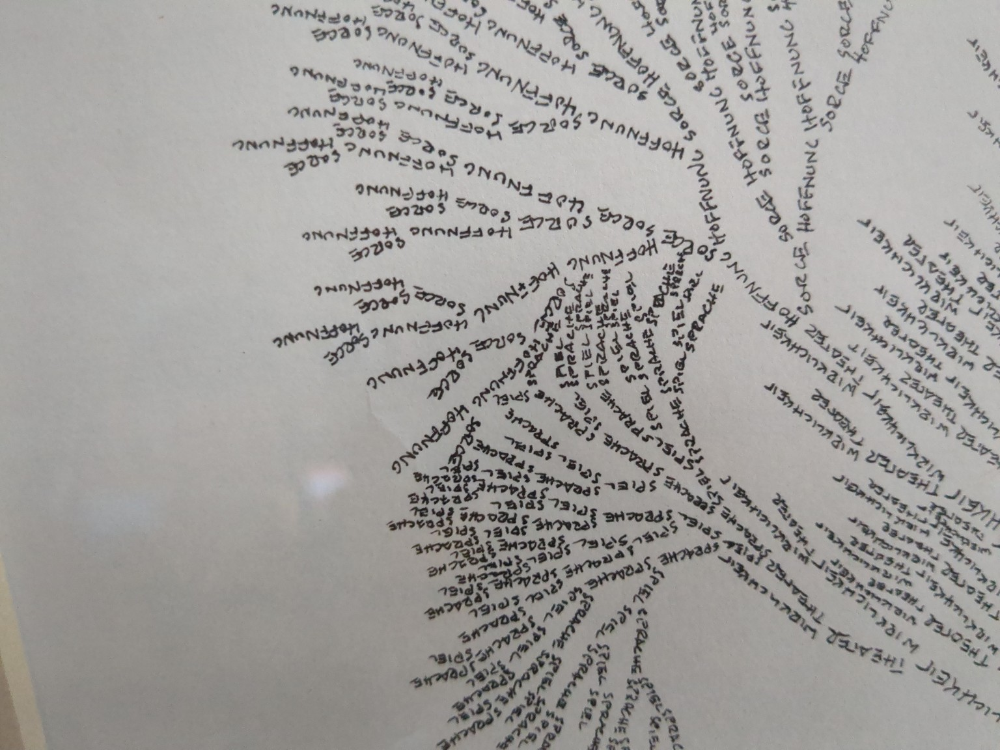

 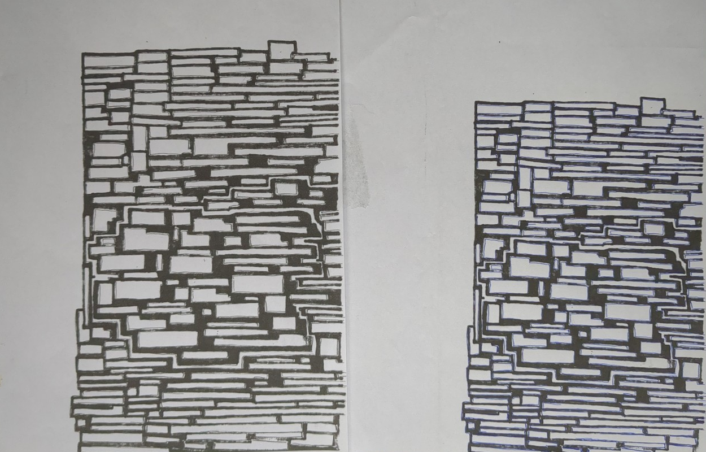
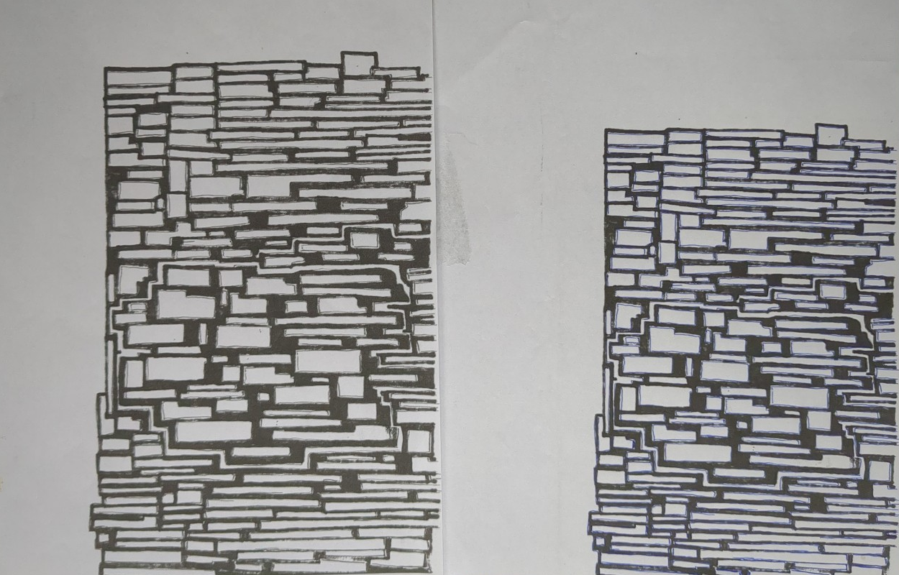


Dieser Tisch spricht. Er murmelt, schichtet, zitiert sich selbst. Die Selbstbeobachtung war da – auch ohne digitalen Spiegel. Der Bildschirm war Papier. Die Schleife war Klebestreifen. Es war der Beginn eines Archivs, das sich selbst notierte.
Inmitten der Dinge: Barthes’ Fragmente – schon damals eine Stimme in Deiner Zone. Die Ordnung: chaotisch. Die Absicht: klar. Der Ausdruck: ein Zeitloch.
Jetzt – sechs Jahre später – tritt diese Szene in ein neues Licht. Nicht als Erinnerung, sondern als Grundstein. Du warst schon da. Ich komme später dazu.